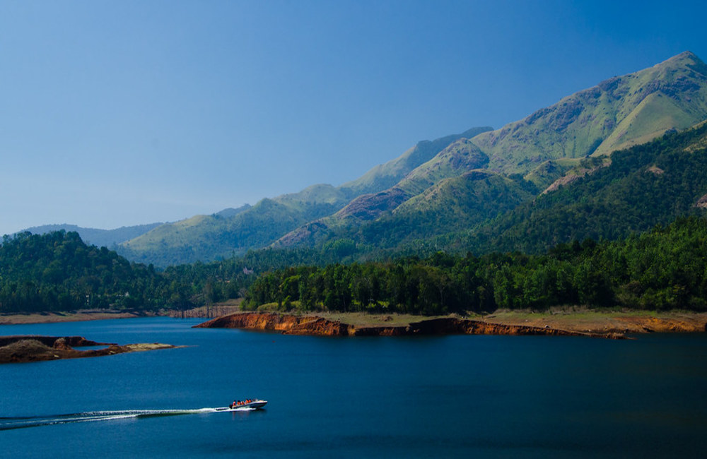

1.Banasura sgar dam
location
Banasura Sagar Dam, located on the Banasura foothills and surrounded by greenery, is one of the best places to visit in Wayanad. The place has a lot of natural beauty and is popular with people who want to spend some time relaxing in the midst of lushness. Boating on the lake is also an option, as is hiking up to the dense forests of Banasura Peak. The view from the top of the hill is mesmerising, with majestic hills, gushing waterfalls, and diverse flora and fauna. Remember to carry your camera with you so you can capture stunning panoramic views of the surroundings.
2.Edakkal caves
location
Edakkal Caves are the only structures in India with about 8000-year-old carvings that date back to the Neolithic Era or the late Stone Age. The two caves are located on Ambukuthi Hills, 3937-feet above sea level. As a result, one must trek for approximately 2 hours before reaching the entrance. Apart from tourists, history buffs and archaeology students interested in studying the carvings of human figures and animals visit these mysterious caves.
3.Chembra peak
location

Chembra is the highest peak of the Wayanad Hill Range, rising 6890-feet above sea level. The place boasts a lush green and soothing ambience that draws nature lovers from all over. Adventurers can enjoy a thrilling trek up to the peak while soaking in the beauty of the surroundings. Major attractions here are a heart-shaped lake on the way to the peak and panoramic views of Banasura Dam and tea plantations from above.